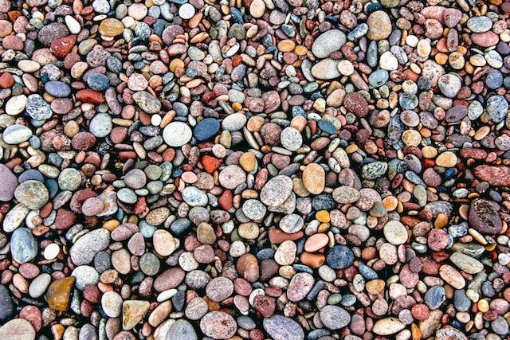

En samling af eksempler og forklaringer omkring CSS layout.
The display property
Der er to typer af elementer i HTML:
- inline elementer
- block level elementer
Inline elementer - eksempler
<img>
<a>
<span>

Block level elementer - eksempler
<h1>
<h2>
<p>
<header>
<footer>
<nav>
<ul>
<li>
<section>
<article>
<aside>
<main>
...og der er flere endnu.
The box model
Nedenfor er en section med 'Noget tekst'. Der er tilføjet padding, border og margin i CSS.
The float property

Floats bruges kun til at få f.eks. tekst til at wrappe rundt om et billede som her.
Tidligere (ca. 2005-2012) da anvendte man float til at opbygge en hjemmesides layout. Det var en slags
hack, da der endnu ikke var nemme layout løsninger, som vi har i dag med Flexbox og Grid.
The trick with margin: 0 auto
Nedenfor er et eksempel med en section som får defineret en vidde og dernæst bliver den centreret på
siden med margin: 0 auto. Se mere i stylesheetet.
En section her som er centreret med margin: 0 auto;
The position property
Med positioning kan du flytte elementer rundt i forhold til hvor de normalt vil sidde. Det anvendes ikke
til layout, men i stedet mere til fine-tuning af specifikke elementers placering. Se eksempler nedenfor:
Her et en section som har fået postion: fixed
The Flexbox layout
CSS Flexbox layout (Module) anvendes til dele af et layout som f.eks. skal fordeles ens i en retning. Det
kan f.eks. være i navigationen af en hjemmeside. Se den øverste navigation. Der har
<nav> elementet fået display: flex.
The Grid layout
CSS Grid layout (Module) anvendes til hele layoutet eller dele af layoutet for en hjemmeside. Det skiller
sig ud fra Flexbox ved at man kan arbejde med layoutet i to akser - altså både vertikalt og horisontalt.